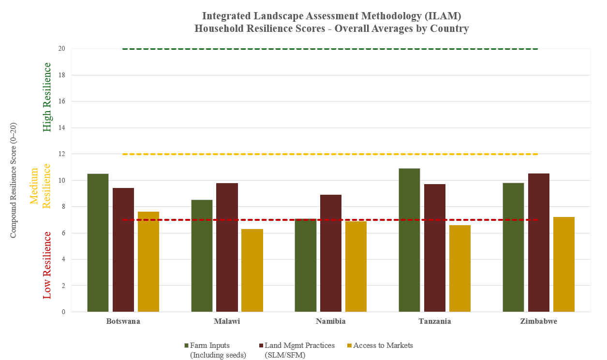
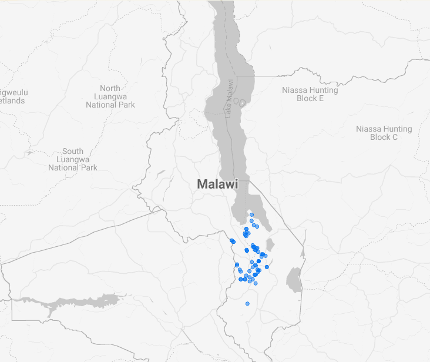

The Sustainable Landscape Production Framework (SLPF)
An integrated, systems-based approach to achieving Land Degradation Neutrality in dryland production landscapes — breaking down the silos between agriculture, forestry and livestock so that interventions generate income, food and energy security, and ecological integrity at the same time.
3 PillarsOne Country, One Core ThemeLand Degradation NeutralityFAO · GEF
Working Paper · At a GlanceWhat the SLPF is
The Sustainable Landscape Production Framework is the DSL-IP's operational response to a recurring problem in dryland management: interventions that target one bottleneck at a time and fail to produce systemic change because the complementary constraints stay unaddressed. The SLPF integrates three proven approaches into a single, coordinated package — so seed systems, advisory services and markets reinforce one another instead of running in parallel.
Architecture
3
interconnected technical pillars
Strategy
1
core theme per country champion
Drylands
42%
of Earth's land; ~60% of food production
Miombo woodlands
266M ha
across ten countries, ~150M people
Delivered through
FFPOs
forest & farm producer organizations
Applied in
2
case studies: Malawi & Zimbabwe
In one sentence
The SLPF combines Community Seed Banks, the Forest & Farm Facility and Farmer Field Schools — anchored in producer organizations and tailored to each country's evidence-based core theme — into one coherent system that advances Land Degradation Neutrality while improving livelihoods.
The three pillars
01 Community Seed Banks (CSB)
Crop diversification, agrobiodiversity conservation and stronger social networks — the genetic pool of drought-tolerant options for land management.
02 Forest & Farm Facility (FFF)
Business incubation and green value chains that reward sustainable landscape production over degradation and deforestation.
03 Farmer Field Schools (FFS)
Participatory, experiential learning for technology transfer in sustainable land and forest management.
Most powerful integrated
Each pillar works alone — but improved seeds without knowledge, or knowledge without markets, rarely sustains. Their integration is the point.
Keywords
Land Degradation NeutralityIntegrated landscape approachAgrobiodiversityGreen value chainsForest & farm producer organizationsGender & livelihoodsMiombo-Mopane
IntroductionLand degradation in drylands
Drylands cover about 42 percent of the Earth's land surface and are home to over 2.5 billion people, supplying roughly 60 percent of the world's food production (Safriel & Adeel, 2005; Pringle et al., 2020). Yet they are among the most vulnerable ecosystems on the planet, under compounding pressure from climate change, population growth and unsustainable land management (Reynolds et al., 2007; Cherlet et al., 2018). The IPBES Global Assessment estimated that more than 75 percent of the Earth's land is already substantially degraded, with dryland regions disproportionately affected (IPBES, 2018).
In Africa, more than 65 percent of the surface is dryland. Some 266 million hectares fall within the Miombo woodlands — one of the world's most significant biodiversity areas, stretching across ten countries and supporting over 150 million people (Ribeiro et al., 2015; Ryan et al., 2016; Campbell et al., 2007).
Drivers and manifestations
Direct drivers
Forest-to-farm conversion, intensive nutrient-mining agriculture, overgrazing and deforestation for fuelwood and charcoal (Geist & Lambin, 2004; Chidumayo & Gumbo, 2010).
Indirect drivers
Population pressure and institutional fragmentation that leaves landscapes without coherent management plans.
A drying baseline
From 1960–2023, 27.9% of global land became significantly more arid; Southern African rainfall fell ~25.6% (1960–2007) (Sardans et al., 2024).
Productivity loss
Rain-fed maize — a staple across sub-Saharan Africa — is declining with reduced water retention, topsoil loss and nutrient depletion (Lobell et al., 2011).
Barriers to sustainable management
The deepest barrier: silo thinking
Agriculture, forestry and livestock are traditionally treated as separate and even competing domains — producing fragmented land-use planning, an imbalance between income and ecosystem protection, and piecemeal interventions that miss synergies and create trade-offs (Reed et al., 2016).
At farm level, constraints are structural rather than just knowledge gaps: access to quality seeds — especially drought-tolerant, neglected and underutilized species — is a recurrent bottleneck (Mmbando, 2025; Johnston & Buhrow, 2023); the erosion of traditional knowledge systems has narrowed agrobiodiversity (Boerma & Koohafkan, 2004; Jakes, 2024); weak extension and farmer-to-farmer learning limit social learning; and weak market infrastructure with asymmetric bargaining power denies farmers the price premiums that would justify their investments (Vargas Hill et al., 2021). Gender inequalities further restrict women's access to land, resources and decision-making, even though women hold critical natural-resource knowledge (Meinzen-Dick et al., 2014).
The opportunity
Holistic, landscape-level approaches are increasingly recognized as essential to reverse degradation and build resilience (Sayer et al., 2013). Land Degradation Neutrality, championed by the UNCCD, provides the policy frame (Cowie et al., 2018) — but interpreted narrowly as a biophysical target, it risks short-term gains while underlying drivers persist. System-thinking that integrates ecological, social and economic dimensions can transform landscapes for livelihoods and environment at once. The SLPF is one such integrated approach.
StrategyThe DSL-IP and the Core Theme approach
The DSL-IP is a GEF-funded, FAO-led programme (with IUCN and CDE-WOCAT) operating in 11 countries across three eco-regions — the Savannas of East and West Africa, the Great Steppes of Central Asia and the Miombo-Mopane landscapes of Southern Africa (GEF, 2020). Regional Exchange Mechanisms (REMs) connect countries to technical hubs and partners such as the SADC Great Green Wall Initiative, ensuring coordination and knowledge exchange.
One Country Champion, One Core Theme
Rather than dispersing resources across disconnected interventions, each country concentrates on a single high-priority management challenge — a specific income-generating opportunity or green value chain with high potential for improving landscapes, livelihoods and scalability. Core themes are selected through a rigorous, evidence-based process and are nationally significant yet regionally transferable, so each national effort becomes a building block for collective impact.
Selection draws on comprehensive baseline assessments — household surveys, focus group discussions, value-chain assessments, remote sensing and stakeholder mapping — the Integrated Landscape Assessment Methodology (ILAM). A key diagnostic within ILAM is SHARP+, which produces a resilience gap analysis that pinpoints common deficits (market access, seed diversity, technical extension) across landscapes, serving as the empirical fingerprint that justifies the core theme.
LDN linkage
Themes must contribute to avoiding, reducing and reversing degradation — preserving the land resource base in line with SDG 15.3 and the UNCCD (Orr et al., 2017; Cowie et al., 2018; UNCCD, 2022).
Livelihoods & gender
Themes embed gender-responsive approaches and livelihood opportunities; empowering women and marginalized groups unlocks their potential as agents of change (Meinzen-Dick et al., 2014).
Upscaling potential
Themes demonstrate potential for scaling — magnitude of benefits, geographic scope and fundamental behavioural or structural change (GEF, 2020).
Fundamentally, the core theme is the mechanism that contextualizes the SLPF: rather than applying a generic template, the identified theme determines how the three pillars are tailored, concentrating financial, technical and institutional resources around one high-leverage entry point — prioritizing depth over breadth.
The FrameworkFostering synergies across land uses
The SLPF's novelty is not new instruments but their coherent combination. By intentionally linking seed systems, advisory services and market development within a single operational architecture, it overcomes the fragmentation that has limited previous interventions. It is built on three interconnected technical pillars, each a strategic entry point to restore landscape integrity while responding to documented farm- and landscape-level constraints.
The institutional foundation · FFPOs
The framework is delivered through organized land-user groups — particularly forest and farm producer organizations (FFPOs), systematically mapped, assessed and targeted during contextualization. Research on collective action shows that organized groups with trust, shared norms and local governance manage common-pool resources more effectively than individuals (Ostrom, 1990; Pretty & Ward, 2001; Pretty, 2003). Through the integrated pillars, FFPOs become hubs of integrated knowledge — anchoring the benefits of integration at community level well beyond the project cycle (FAO & AgriCord, 2016; FAO, 2021).
The three pillars in depth
Community Seed Banks — crop diversification & social networks
As stable food-crop production (especially maize) declines under climate change and soil degradation, drought-tolerant seed crops and diverse tree seedlings provide the genetic pool of options for land management (Ribeiro et al., 2015). Centuries of crop specialization — colonial cash-crop monocultures and market-driven promotion of cassava and maize — have narrowed agrobiodiversity. In Cuchi, Angola, two crops now make up 98 percent of local output (DSL-IP, 2019).
Diverse cropping systems are naturally more resilient; monocultures are highly vulnerable to shocks (Lin, 2011).
Traditional crops provide a broader range of essential nutrients, countering dietary deficiency (Kahane et al., 2013).
Seed banks maintain locally adapted varieties, let communities restart production after disasters, and share knowledge and resources (Vernooy et al., 2017; Vernooy & Otieno, 2021; De Falcis et al., 2022).
Forest & Farm Facility — business incubation along green value chains
Green value chainsEnterprise developmentMarket access & finance
The FFF pillar focuses on business incubation and growth for FFPOs in green value chains — market-oriented systems that add value to forest and farm products while safeguarding environmental integrity. Rather than primary production alone, it equips communities with enterprise development, business planning, quality upgrading, market intelligence and financial literacy to turn dryland products into bankable, climate-resilient green enterprises.
Captures more value from NTFPs, sustainable charcoal, bee products, ecotourism and drought-tolerant crops — creating alternatives to environmentally harmful activities.
Strengthens inclusive, gender-responsive green economies and improves FFPO bargaining power and creditworthiness (Kaplinsky, 2000; FAO, 2021).
Catalyzes private-sector linkages that reward sustainable landscape production rather than degradation and deforestation.
Farmer Field Schools — experiential learning for SLM/SFM
Participatory learningFarmer-to-farmerTechnology transfer
FFS provide a participatory, experiential platform for technology transfer and sustainable land management (FAO, 2020). Through peer-to-peer exchange, hands-on training and skill development, farmers gain practical techniques to raise productivity while conserving landscape integrity, strengthening community cohesion and adaptive capacity (Waddington & White, 2014).
Transfers proven and innovative SLM/SFM practices through context-sensitive, participatory methods.
Builds farmer capacity to diagnose, analyse and respond to land degradation, linking technical training to landscape objectives.
Embeds a robust exit strategy so adoption endures — knowledge is co-created, not imposed (Bezner Kerr et al., 2021).
Integration: synergizing for a common goal
The true power of the SLPF lies not in its individual pillars but in their integration (Sayer et al., 2013; Reed et al., 2016). It operates along three dimensions:
01
Functional synergies
FFS skills + FFF market incentives + CSB germplasm delivered as a coherent package, not disconnected interventions (Plieninger et al., 2020).
02
Cross-cutting principles
Gender equity, social inclusion and resilience addressed across all interventions, not as stand-alone components (Meinzen-Dick et al., 2014).
03
Replication across contexts
A systems approach targeting root causes, with documented methodology other countries can adapt.
The evidence base · ILAM
A complementary analytical tool
The Integrated Landscape Assessment Methodology (ILAM) provides the evidence base for the SLPF — applied to define the baseline and core theme, tailor the ICDIP, and inform integrated land-use plans. It triangulates remote sensing, household surveys, resilience and behaviour-change assessments, value-chain analyses, carbon accounting and participatory consultations (Gonzalez-Roglich et al., 2019). Read the ILAM working paper →
Contextualization · the ICDIP
The SLPF is adapted through a three-level contextualization process: identifying and verifying the management challenge (core theme); consultation between commissioners and SLPF designers; and detailed planning that operationalizes the pillars into an Integrated Capacity Development and Implementation Plan (ICDIP).
Component
CSB dimension
FFF dimension
FFS dimension
Assessment
Agrobiodiversity survey, seed-system mapping
Value-chain assessment, FFPO capacity review
Farmer knowledge baseline, behaviour change, SLM/SFM practice inventory
Table 1. Integrated Capacity Development and Implementation Plan (ICDIP) structure.
Evidence-Based ApplicationThe SLPF in practice
Translating the SLPF from framework to reality requires evidence-based application tailored to each country. Two case studies from the Miombo-Mopane eco-region illustrate the methodology in action — Zimbabwe (neglected & underutilized species and non-wood forest product value chains) and Malawi (integrated food and energy systems).

Figure 1 SHARP+ household resilience scores across five Miombo-Mopane countries reveal common deficits — access to markets and farm inputs cluster in the low-to-medium band — the empirical fingerprint that justifies each core theme.
Zimbabwe · NUS & NWFP value chains
Across the Save and Runde catchments, more than 70 percent of land is affected by soil erosion and fertility decline; 80 percent of forest is affected by veld fires and 40 percent by deforestation and invasive species (GEF, 2020). An ILAM resilience and behaviour-change assessment of 514 households found moderate overall resilience (10.17/20), lowest in the economic domain (8.92), with rain-fed maize cultivated by 86 percent of farmers (Johnston & Buhrow, 2024; Lobell et al., 2011).
The core theme & COM-B insight +
Sorghum and millet are already grown by 41% and 31% of respondents; 95% of sorghum growers report positive impacts (drought tolerance, nutrition). A COM-B analysis (Michie et al., 2011) showed barriers are structural, not attitudinal — lack of technical knowledge and finance, not skepticism. NWFP collection is shared or female-led in over 90% of households, confirming the theme's suitability for gender-responsive engagement (Meinzen-Dick et al., 2014).
Achieved results by mid-term +
FFS: 14,000+ ha under community forest management, 2,249 ha under assisted natural regeneration, and a 39% reduction in veld-fire incidence across 4,250 ha of improved fire management. FFF: 15 FFPO business plans, 128 Village Savings & Lending groups and nine financial institutions engaged. Integration: 74 extension workers trained as Master Trainers and a single FFS/APFS curriculum combining SLM, SFM and business development — embedding cross-sectoral logic in the national extension system (Bezner Kerr et al., 2021).
Government ownership & outscaling +
The national LDN Technical Working Group has been reactivated; Provincial Development Committees in three provinces revised their terms of reference to incorporate LDN; and eight districts have mainstreamed Integrated Land Use Plans into statutory district master plans (Cowie et al., 2018; UNCCD, 2022). AGRITEX extension officers integrated catchment restoration, conservation, nurseries and business development into routine delivery — the institutional embedding that sustains the approach beyond the project cycle (Waddington & White, 2014).
Malawi · Integrated Food & Energy Systems (IFES)
With over 90 percent of the population relying on firewood and charcoal (Kambewa & Chiwaula, 2010), and agricultural expansion driving a reinforcing cycle of deforestation and soil degradation (Jumbe & Angelsen, 2006; Davies et al., 2010), Malawi selected IFES as its core theme — combining nitrogen-fixing pigeon pea with rain-fed maize and livestock in agroforestry configurations that address energy insecurity, food production and land degradation at once.
IFES across the three pillars
CSB ensures access to suitable pigeon-pea germplasm (higher-biomass varieties for fuel). FFF develops value chains for pigeon-pea products — value addition, governance, market access, certification. FFS trains farmers in IFES establishment, crop-residue energy and efficient cookstoves, with curricula informed by ILAM behavioural diagnostics.

Figure 2 70 FFPOs identified across Mangochi, Ntcheu and Balaka Districts through the ILAM FFPO assessment — the social capital through which the SLPF is delivered.
By strengthening existing FFPOs rather than building parallel structures, the SLPF embeds benefits in durable local institutions, with a built-in exit strategy: as FFPOs gain capacity to manage value chains, seed banks and training networks independently, the project's direct role diminishes while the institutional legacy endures. A multi-scale monitoring framework links farm-level practice adoption to landscape-level remote sensing of the UNCCD's three LDN sub-indicators (Orr et al., 2017; Gonzalez-Roglich et al., 2019).
SustainabilityScaling out the framework
The SLPF's long-term impact depends on integration into broader governance, planning and institutional structures — through two complementary pathways that ensure the integrated approach outlasts project cycles.
1 Integrated land-use planning
ILUPs and VLUPs informed by ILAM and SLPF principles embed cross-sectoral collaboration into local and national governance, making integrated logic part of the community's own development vision rather than an external requirement (Cowie et al., 2018).
2 National extension systems
Embedding the framework's logic into extension curricula, procedures and strategy — with FFPOs as the community-level delivery mechanism — so continuation no longer depends on project financing (Waddington & White, 2014).
Enabling conditions
High-level policy endorsement; strengthened coordination between agriculture and forestry departments to overcome internal silos; monitoring systems that capture cross-sectoral outcomes beyond single-commodity metrics; and documented experiences packaged as practical toolkits extension departments can adopt with minimal additional investment.
The Way ForwardConclusion
The SLPF represents a methodological advance in achieving Land Degradation Neutrality in dryland landscapes. By breaking down the silos between agriculture, forestry and livestock, its three pillars create synergies far greater than the sum of their parts. Its emphasis on evidence-based contextualization, participatory engagement and institutional sustainability ensures interventions are relevant, effective and enduring.
The core message
The SLPF demonstrates that achieving LDN need not come at the expense of livelihoods, nor must livelihood improvement come at the expense of the environment. By fostering synergies across land uses, empowering communities with the tools and knowledge they need, and grounding interventions in evidence and local context, it offers a pathway toward resilient, productive and inclusive dryland landscapes.
Looking ahead, four priorities will determine broader uptake: continued investment in monitoring and evaluation; integration of SLPF principles into land-use plans and national policy; institutionalization within national extension systems with FFPOs as the delivery mechanism; and the sharing of experiences through the Regional Exchange Mechanisms and Communities of Practice.
References & ResourcesReferences
Bezner Kerr, R., et al. (2021). Can agroecology improve food security and nutrition? A review. Global Food Security, 29, 100540. doi:10.1016/j.gfs.2021.100540
Boerma, D., & Koohafkan, P. (2004). Local knowledge systems and the management of dryland agro-ecosystems. FAO, Rome.
Campbell, B., et al. (2007). Miombo woodlands — opportunities and barriers to sustainable forest management. CIFOR, Bogor. cifor-icraf.org
Chasek, P., et al. (2019). Operationalizing zero net land degradation. Journal of Arid Environments, 112, 5–13. doi
Cherlet, M., et al. (Eds.) (2018). World Atlas of Desertification. Publications Office of the European Union, Luxembourg. wad.jrc.ec.europa.eu
Chidumayo, E.N., & Gumbo, D.J. (Eds.) (2010). The Dry Forests and Woodlands of Africa. Earthscan, London.
Cowie, A.L., et al. (2018). Land in balance: the scientific conceptual framework for LDN. Environmental Science & Policy, 79, 25–35. doi:10.1016/j.envsci.2017.10.011
Davies, G., Pollard, L., & Mwenda, M. (2010). Perceptions of land-degradation, forest restoration and fire management: a case study from Malawi. Land Degradation & Development, 21, 546–556. doi
De Falcis, E., et al. (2022). Strengthening the economic sustainability of community seed banks. Frontiers in Sustainable Food Systems, 6, 803195. doi:10.3389/fsufs.2022.803195
DSL-IP (2019). SHARP+ Resilience Assessment in Angola. FAO, Rome.
FAO (2020). Farmer Field Schools Guidance Document. FAO, Rome. fao.org
FAO (2021). Forest and Farm Facility: Phase II Strategic Framework. FAO, Rome. fao.org
FAO (2023). Enhancing Efforts for Productive and Resilient Dryland Landscapes in Southern Africa. FAO, Accra. fao.org
FAO & AgriCord (2016). Forest and farm producer organizations — operating systems for the SDGs. FAO, Rome. fao.org
Fredenberg, P., et al. (2024). Opportunity crop profiles for the Vision for Adapted Crops and Soils in Africa. AGRA, Nairobi.
Geist, H.J., & Lambin, E.F. (2004). Dynamic causal patterns of desertification. BioScience, 54, 817–829. doi
Gonzalez-Roglich, M., et al. (2019). Synergizing global tools to monitor progress towards LDN: Trends.Earth and WOCAT. Environmental Science & Policy, 93, 34–42. doi:10.1016/j.envsci.2018.12.019
Grainger, A. (2015). Is Land Degradation Neutrality feasible in dry areas? Journal of Arid Environments, 112, 14–24. doi
IPBES (2018). The Assessment Report on Land Degradation and Restoration. IPBES, Bonn. ipbes.net
Jakes, V. (2024). The role of traditional knowledge in sustainable development. Int. J. Humanit. Soc. Sci., 3(2), 40–55.
Johnston, S., & Buhrow, A. (2023). Resilience and Behavioural Change Assessment in Malawi. FAO, Rome.
Johnston, S., & Buhrow, A. (2024). Resilience and Behavioural Change Assessment in Zimbabwe. FAO, Rome.
Jumbe, C.B.L., & Angelsen, A. (2006). Do the poor benefit from devolution policies? Evidence from Malawi. Land Economics, 82, 562–581. doi
Kahane, R., et al. (2013). Agrobiodiversity for food security, health and income. Agronomy for Sustainable Development, 33, 671–693. doi:10.1007/s13593-013-0147-8
Kambewa, P., & Chiwaula, L. (2010). Biomass Energy Use in Malawi. IIED, London. iied.org
Kaplinsky, R. (2000). Globalisation and unequalisation: what can be learned from value chain analysis? Journal of Development Studies, 37, 117–146. doi:10.1080/713600071
Lin, B.B. (2011). Resilience in agriculture through crop diversification. BioScience, 61, 183–193. doi:10.1525/bio.2011.61.3.4
Lobell, D.B., Schlenker, W., & Costa-Roberts, J. (2011). Climate trends and global crop production since 1980. Science, 333, 616–620. doi:10.1126/science.1204531
Meinzen-Dick, R., et al. (2014). Engendering agricultural research, development, and extension. IFPRI, Washington, DC. ifpri.org
Michie, S., van Stralen, M.M., & West, R. (2011). The behaviour change wheel. Implementation Science, 6, 42. doi:10.1186/1748-5908-6-42
Mmbando, G.S. (2025). Utilizing the potential of underutilized and neglected crops for Africa food security. Discover Plants, 2, 163.
Nkonya, E., Mirzabaev, A., & von Braun, J. (Eds.) (2016). Economics of Land Degradation and Improvement. Springer, Cham. doi:10.1007/978-3-319-19168-3
Okpara, U.T., Stringer, L.C., & Dougill, A.J. (2019). Using a climate–water conflict vulnerability index. Regional Environmental Change, 17, 351–366.
Orr, B.J., et al. (2017). Scientific Conceptual Framework for Land Degradation Neutrality. UNCCD-SPI, Bonn. unccd.int
Plieninger, T., et al. (2020). Agroforestry for sustainable landscape management. Sustainability Science, 15, 1255–1266. doi:10.1007/s11625-020-00836-4
Pretty, J. (2003). Social capital and the collective management of resources. Science, 302(5652), 1912–1914. doi:10.1126/science.1090847
Pretty, J., & Ward, H. (2001). Social capital and the environment. World Development, 29(2), 209–227. doi:10.1016/S0305-750X(00)00098-X
Pringle, M.J., et al. (2020). Landscape sustainability science in the drylands. Landscape Ecology, 35, 2207–2217.
Reed, J., et al. (2016). Integrated landscape approaches to managing social and environmental issues in the tropics. Global Change Biology, 22, 2540–2554. doi:10.1111/gcb.13284
Reynolds, J.F., et al. (2007). Global desertification: building a science for dryland development. Science, 316, 847–851. doi:10.1126/science.1131634
Ribeiro, N.S., et al. (2015). Miombo woodlands research towards sustainable use of ecosystem services, in Biodiversity in Ecosystems. IntechOpen, London. doi
Ryan, C.M., et al. (2016). Ecosystem services from southern African woodlands and their future. Phil. Trans. R. Soc. B, 371, 20150312. doi:10.1098/rstb.2015.0312
Safriel, U.N., & Adeel, Z. (2005). Dryland systems, in Millennium Ecosystem Assessment. Island Press, Washington, DC.
Sardans, J., et al. (2024). Growing aridity poses threats to global land surface. Communications Earth & Environment, 5, 776. doi
Sayer, J., et al. (2013). Ten principles for a landscape approach. PNAS, 110, 8349–8356. doi:10.1073/pnas.1210595110
Vargas Hill, R., et al. (2021). Strengthening producer organizations to increase market access in Uganda. Agric. Resour. Econ. Rev., 50(3), 436–464. doi
Vernooy, R., Shrestha, P., & Sthapit, B. (Eds.) (2017). Community Seed Banks: Origins, Evolution and Prospects. Routledge, London.
Vernooy, R., & Otieno, G. (2021). Strengthening smallholder farmers and climate adaptation: roles of community seedbanks, in Handbook of Climate Change Management. Springer, Cham.
Waddington, H., & White, H. (2014). Farmer field schools: from agricultural extension to adult education. 3ie, London. 3ieimpact.org
Zomer, R.J., et al. (2016). Global tree cover and biomass carbon on agricultural land. Scientific Reports, 6, 29987. doi:10.1038/srep29987
Citations link to the published source (DOI) or the issuing institution. This bibliography reproduces the SLPF working paper reference list.
The SLPF is deliberately flexible. While Southern Africa is used as a practical example, the framework and methodologies are designed to be adapted to context and common management challenges in any landscape setting.